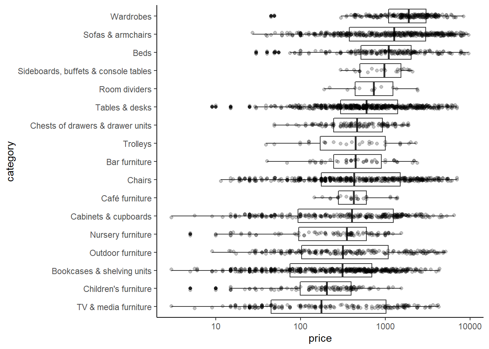
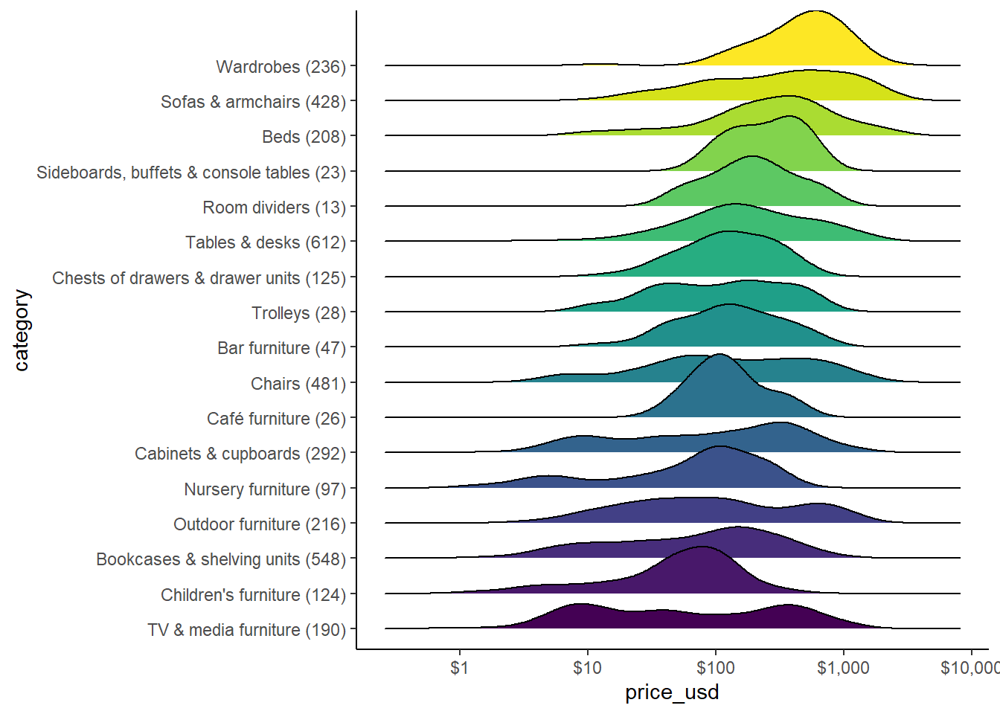
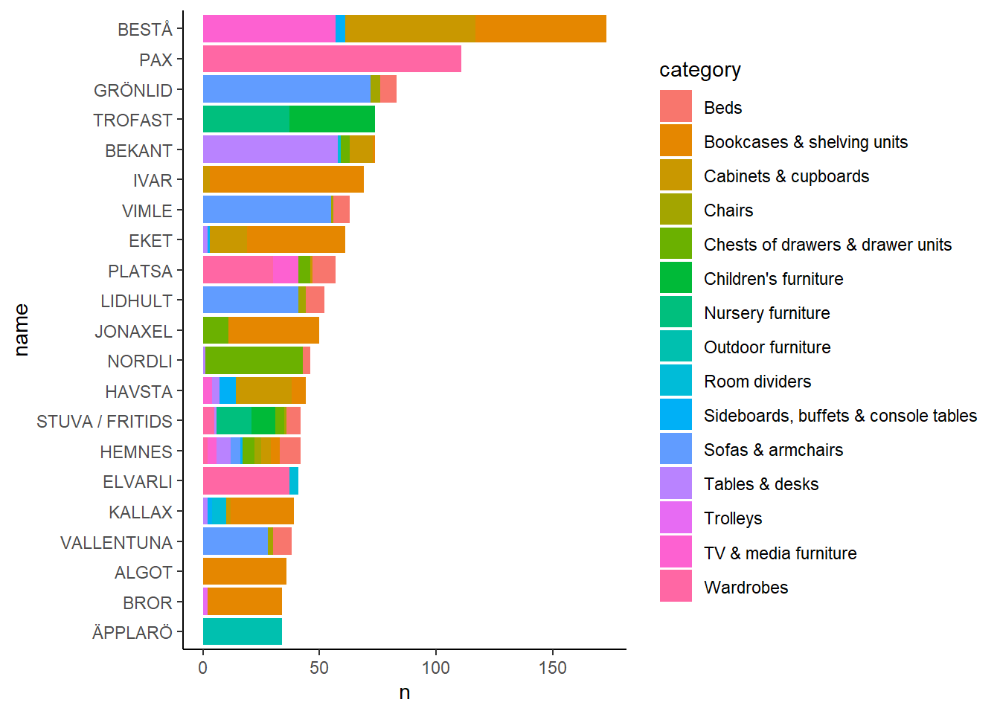

TidyTuesday_IKEA
Andrew Borozan
2022-03-17
library(pacman)
p_load(tidyverse, skimr, scales, rmarkdown, magrittr, lubridate, janitor, htmltab, ggrepel, viridis,
ggthemes, knitr, rvest, reactable, RSelenium, stringr.plus, htmltools, tidytuesdayR, ggridges, glue)
options(scipen=999)
theme_set(theme_classic())
ikea <- tt_load("2020-11-03")## --- Compiling #TidyTuesday Information for 2020-11-03 ----## --- There is 1 file available ---## --- Starting Download ---##
## Downloading file 1 of 1: `ikea.csv`## --- Download complete ---ikea <- ikea$ikea #it downloaded as a list with one item. The one item was the table. Just extract the one item and put it in an object.
ikea <- ikea %>% select(-1)
#What are the most common categories?
ikea %>% count(category, sort = TRUE) %>%
mutate(category = fct_reorder(category, n)) %>%
ggplot(aes(category, n)) + geom_col() +
coord_flip()#How do category and price relate?
#Distribution of price by category
ikea %>% mutate(category = fct_reorder(category, price)) %>%
ggplot(aes(price, category)) +
geom_boxplot() +
scale_x_log10() #Dave said whenever you have prices you probably want a log scaleikea %>% mutate(category = fct_reorder(category, price)) %>%
ggplot(aes(price, category)) +
geom_boxplot() +
geom_jitter(width=0, height = .1, alpha = .23)+
scale_x_log10()
# How many items per category?
library(glue)
ikea %>% add_count(category, name = "category_total") %>%
mutate(category = glue("{ category } ({ category_total })"),
category = fct_reorder(category, price)) %>%
ggplot(aes(price, category)) +
geom_boxplot() +
scale_x_log10()#Conversion rate Saudi to US$
ikea <- ikea %>% mutate(price_usd = .27*price)
ikea %>% add_count(category, name = "category_total") %>%
mutate(category = glue("{ category } ({ category_total })"),
category = fct_reorder(category, price)) %>%
ggplot(aes(price_usd, category)) +
geom_boxplot() +
scale_x_log10(labels = dollar)
#Same data as ridges
library(ggridges)
ikea %>% add_count(category, name = "category_total") %>%
mutate(category = glue("{ category } ({ category_total })"),
category = fct_reorder(category, price)) %>%
ggplot(aes(price_usd, category, fill = category)) +
geom_density_ridges(show.legend = FALSE) +
scale_x_log10(labels = dollar)+
scale_fill_viridis(discrete = TRUE)## Picking joint bandwidth of 0.165
ikea %>% add_count(category, name = "category_total") %>%
mutate(category = glue("{ category } ({ category_total })"),
category = fct_reorder(category, price)) %>%
ggplot(aes(price_usd, category, fill = other_colors)) +
geom_density_ridges(alpha = .5) +
scale_x_log10(labels = dollar)+
scale_fill_viridis(discrete = TRUE, option = "magma", begin = .9, end = .4)## Picking joint bandwidth of 0.174
Looks like things that come in other colors are slightly cheaper.
#Volume
ikea %>% count(name, category, designer, sort = TRUE)## # A tibble: 1,451 x 4
## name category designer n
## <chr> <chr> <chr> <int>
## 1 IVAR Bookcases & shelving units IKEA of Sweden 58
## 2 VIMLE Sofas & armchairs Ehlén Johansson 48
## 3 GRÖNLID Sofas & armchairs Francis Cayouette 46
## 4 PAX Wardrobes IKEA of Sweden/Ehlén Johansson 45
## 5 PAX Wardrobes Ehlén Johansson/IKEA of Sweden 44
## 6 BEKANT Tables & desks K Malmvall/E Lilja Löwenhielm 43
## 7 NORDLI Chests of drawers & drawer units Ola Wihlborg 42
## 8 BESTÅ Bookcases & shelving units IKEA of Sweden 41
## 9 BESTÅ TV & media furniture IKEA of Sweden 39
## 10 JONAXEL Bookcases & shelving units IKEA of Sweden 39
## # ... with 1,441 more rows# Name is like series (think "Martha Stewart"). What does each series sell and how much?
ikea %>% mutate(name = fct_lump(name, 20)) %>%
filter(name != "Other") %>%
count(name, category, sort =TRUE) %>%
mutate(name = fct_reorder(name, n, sum)) %>%
ggplot(aes(n, name, fill = category)) +
geom_col()
ikea %>% count(short_description)## # A tibble: 1,706 x 2
## short_description n
## <chr> <int>
## 1 " 1-seat module" 1
## 2 " 1-seat section" 5
## 3 " 1 sec/storage unit w foldable table, 89x30-104x179 c~ 1
## 4 " 1 section, 44x55x216 cm" 1
## 5 " 1 section, 52x36x222-350 cm" 3
## 6 " 1 section, 78x31x171 cm" 1
## 7 " 1 section, 84x40x216 cm" 1
## 8 " 1 section, 84x55x216 cm" 2
## 9 " 1 section, 92x36x222-350 cm" 1
## 10 " 1 section, 92x51x222-350 cm" 1
## # ... with 1,696 more rows# Let's separate on the comma
ikea <- ikea %>%
mutate(short_description = str_trim(str_replace_all(short_description, "\\s+", " ")))
ikea %>% #Cleans up the strings, removes some whitespace
separate(short_description, c("main_description","cm_measure"), #separates text strings and puts them into these two columns
sep = ", ", # separates by ", "
extra = "merge", #merges any additional commas into the text in the second column
fill = "right",
remove = FALSE) %>% #if there is no separation, NA for the second column
tidyr::extract(cm_measure, "description_cm", "([\\d\\-xX]+) cm", remove = FALSE) %>%
# Dave did the extract - I have the code exactly as written and mine doesn't work...until I turned off magittr. It was using the magittr extract() instead of tidyr::extract()
unite(category_and_description, category, main_description, sep = " - ") %>%
count(category_and_description, sort = TRUE)## # A tibble: 1,012 x 2
## category_and_description n
## <chr> <int>
## 1 Tables & desks - Table 127
## 2 Wardrobes - Wardrobe 121
## 3 Chairs - Table and 4 chairs 83
## 4 Tables & desks - Table and 4 chairs 83
## 5 Chairs - Chair 53
## 6 Bookcases & shelving units - Shelving unit 45
## 7 Chairs - Table and 6 chairs 39
## 8 Tables & desks - Table and 6 chairs 39
## 9 Sofas & armchairs - Corner sofa 33
## 10 Sofas & armchairs - 3-seat sofa 32
## # ... with 1,002 more rows